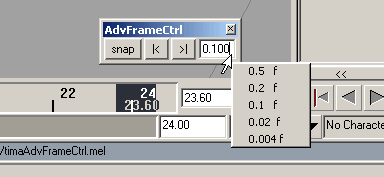
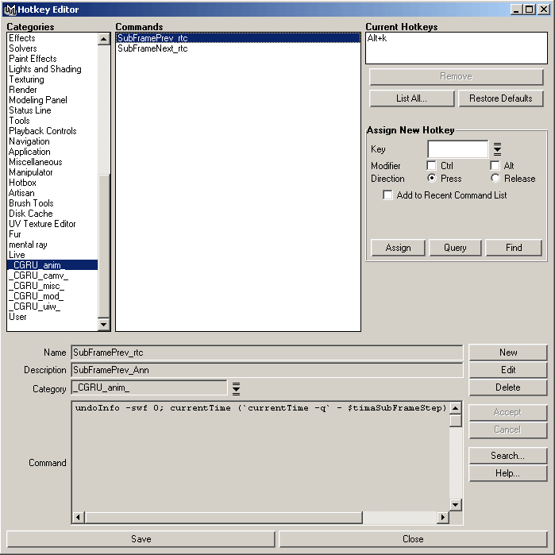

Advanced Frames Control Window:

Press "|<" and ">|" to navigate frames.
"snap" - to ser current Frame to the nearest one.
To set float field subFrame interval edit input field, or press RMB on it to see a menu to quickly choose one.
(0.004 is a minimal maya frame interval.)
Also you can quickly navigate frames using hotkes. Find hotkeys for this action in _CGRU_anim_ category in maya Hotkeys Editor window:
(by default this actions has "Alt+k" and"Alt+l" hotkeys)
